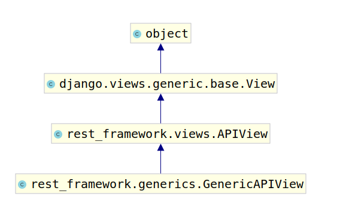

GenericAPIView
rest_framework.generics.GenericAPIView

继承自APIVIew，增加了对于列表视图和详情视图可能用到的通用支持方法。通常使用时，可搭配一个或多个Mixin扩展类。
使用GenericAPIView类一般需要实现queryset属性或者重写get_queryset方法

支持定义的属性：
列表视图与详情视图通用：
- queryset列表视图的查询集
- serializer_class视图使用的序列化器
详情页视图使用：
- lookup_field查询单一数据库对象时使用的条件字段，默认为'
pk' - lookup_url_kwarg查询单一数据时URL中的参数关键字名称，默认与look_field相同
- lookup_field查询单一数据库对象时使用的条件字段，默认为'
提供的方法：
列表视图与详情视图通用：
get_queryset(self)
返回视图使用的查询集，是列表视图与详情视图获取数据的基础，默认返回
queryset属性，可以重写，例如：def get_queryset(self): return BookInfo.objects.all()get_serializer_class(self)
返回序列化器类，默认返回
serializer_class，可以重写，例如：def get_serializer_class(self): return BookInfoModelSerializerget_serializer(self,_args, *_kwargs)
返回序列化器对象，被其他视图或扩展类使用，如果我们在视图中想要获取序列化器对象，可以直接调用此方法。
注意，在提供序列化器对象的时候，REST framework会向对象的context属性补充三个数据：request、format、view，这三个数据对象可以在定义序列化器时使用。
详情视图使用：
get_object(self)返回详情视图所需的模型类数据对象，默认使用
lookup_field参数来过滤queryset。 在试图中可以调用该方法获取详情信息的模型类对象。若详情访问的模型类对象不存在，会返回404。
列表视图方法和属性举例
from rest_framework.generics import GenericAPIView
from book.models import BookInfo
from book.serializers import BookInfoModelSerializer
class BookListGenericView(GenericAPIView):
# 设置查询结果集属性
queryset = BookInfo.objects.all()
# 设置序列化器属性
serializer_class = BookInfoModelSerializer
def get(self,request):
# 1.查询数据
books = self.get_queryset()
# 2.创建序列化器，并传递查询结果集（设置many=True）
serializer = self.get_serializer(books, many=True)
# 3.返回响应 serializer.data 就是字典列表
return Response(serializer.data)
def post(self,request):
# 1.接收参数
book_dict = request.data
# 2.创建序列化器，并传递参数
serializer = self.get_serializer(data=book_dict)
# 3.验证数据，并根据验证结果进行判断
if serializer.is_valid():
# 4.数据验证没有问题，调用序列化器的save方法。来触发序列化器的create方法
# create方法会调用模型来保存到数据库中
serializer.save()
# 5. 返回响应 serializer.data 就是字典数据
return Response(serializer.data)
else:
# 返回错误信息
return Response({'msg': '保存失败'})
我们还可以通过以下方法来实现
class BookListGenericView(GenericAPIView):
# 设置查询结果集属性
# queryset = BookInfo.objects.all()
#重写查询结果集方法
def get_queryset(self):
return BookInfo.objects.all()
# 设置序列化器属性
# serializer_class = BookInfoModelSerializer
# 重写返回序列化器方法
def get_serializer_class(self):
return BookInfoModelSerializer

详情视图方法和属性举例
from rest_framework.generics import GenericAPIView
from book.models import BookInfo
from book.serializers import BookInfoModelSerializer
class BookDetailGenericView(GenericAPIView):
# 设置查询结果集属性
queryset = BookInfo.objects.all()
# 重写查询结果集方法
# def get_queryset(self):
# return BookInfo.objects.all()
# 设置序列化器属性
serializer_class = BookInfoModelSerializer
# 重写返回序列化器方法
# def get_serializer_class(self):
# return BookInfoModelSerializer
# 默认是pk
# 可以修改为 id, 如果修改，
# 则 get,put,delete 方法中的关键字参数都要改变
lookup_field = 'pk'
def get(self,request,pk):
#1.查询指定书籍
book = self.get_object()
#2.创建序列化器，传递模型对象
serializer = self.get_serializer(book)
#3.获取字典数据，并返回响应
return Response(serializer.data)
def put(self,request,pk):
#1.查询指定书籍
book = self.get_object()
#2.创建序列化器，传递模型对象和接收的参数
serializer = self.get_serializer(instance=book,data=request.data)
# 3.验证数据，并根据验证结果进行判断
if serializer.is_valid():
# 4.数据验证没有问题，调用序列化器的save方法。来触发序列化器的update方法
# update方法会调用模型来更新到数据库中
serializer.save()
# 5. 返回响应 serializer.data 就是字典数据
return Response(serializer.data)
else:
# 返回错误信息
return Response({'msg': '保存失败'})
def delete(self,request,pk):
#1.查询指定书籍
book = self.get_object()
#2.删除
book.delete()
#3.返回响应
from rest_framework import status
return Response(status=status.HTTP_204_NO_CONTENT)